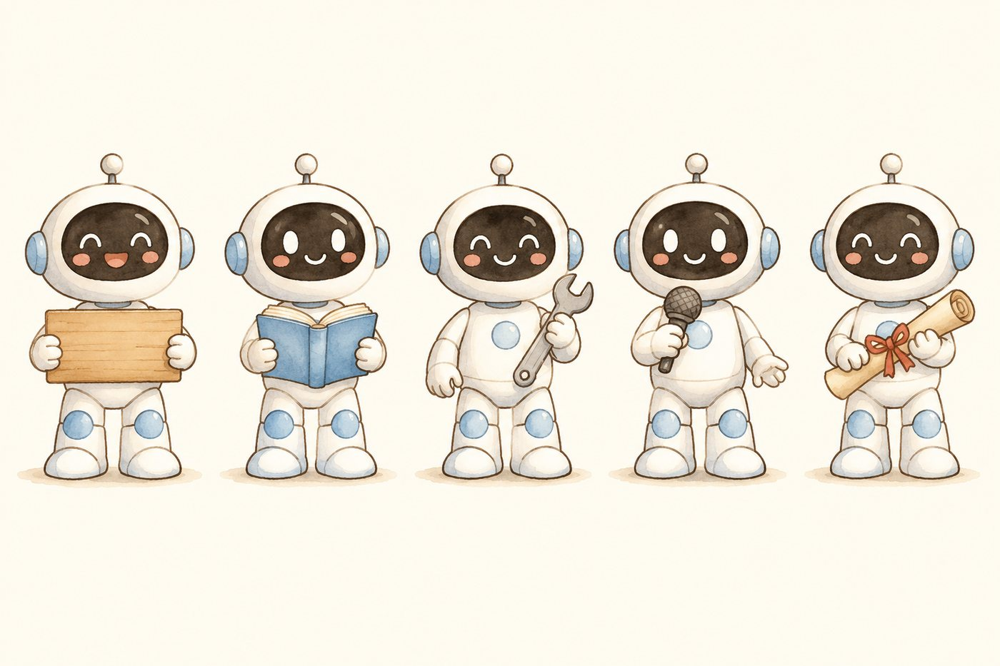

改造 / 升级
手里的 Bot 不太顺手？给它加本事、换流程、接上你自己的数据和工具。

点一下，只看这一类
33 / 33点「怎么用」看怎么装
把一份材料做成能讲的演示稿：结构、页序、图表与讲稿一起给。
把下载好的整个文件发给主Bot（DeepSeekHarness+DSBOT插件），这个Bot就能自动被创建出来。
把知识点做成一页 3:4 竖版手绘信息图：单点 + 场景 + 反差标题，自带分层规范。
把下载好的整个文件发给主Bot（DeepSeekHarness+DSBOT插件），这个Bot就能自动被创建出来。
把知识点做成能翻页的信息图绘本，含 install 脚本、自检与交付说明。
把下载好的整个文件发给主Bot（DeepSeekHarness+DSBOT插件），这个Bot就能自动被创建出来。
主笔 → 设计 → 发布 → 审核四岗位流水线：从选题到草稿箱的完整协作包。
把下载好的整个文件发给主Bot（DeepSeekHarness+DSBOT插件），这个Bot就能自动被创建出来。
从歌词到成片的 MV 流水线：写词、配乐、生成画面、拼接字幕。
把下载好的整个文件发给主Bot（DeepSeekHarness+DSBOT插件），这个Bot就能自动被创建出来。
一句话生成成套表情包：统一角色、统一画风、批量导出可直接发。
把下载好的整个文件发给主Bot（DeepSeekHarness+DSBOT插件），这个Bot就能自动被创建出来。
设计 Bot 风格套件：微缩织物与手作质感，含 BOT.md 指令与安装说明。
把下载好的整个文件发给主Bot（DeepSeekHarness+DSBOT插件），这个Bot就能自动被创建出来。
设计 Bot 风格套件：毛绒玩偶与布艺刺绣字效、儿童词卡，含 BOT.md 指令。
把下载好的整个文件发给主Bot（DeepSeekHarness+DSBOT插件），这个Bot就能自动被创建出来。
设计 Bot 风格套件：传统透明水彩 + 图文编辑式版面，含 BOT.md 指令与安装说明。
把下载好的整个文件发给主Bot（DeepSeekHarness+DSBOT插件），这个Bot就能自动被创建出来。
一句话创意进，3D 动画短片出：分镜、角色卡、逐镜渲染、配音、拼接、封面。
把下载好的整个文件发给主Bot（DeepSeekHarness+DSBOT插件），这个Bot就能自动被创建出来。
把一条成片拆成逐镜头分析表：时长、景别、运镜、画面，并出可交互拉片报告。
把下载好的整个文件发给主Bot（DeepSeekHarness+DSBOT插件），这个Bot就能自动被创建出来。
文案 + 形象 + 声音 → 1080×1920 竖屏口播片：手绘动画 + 对口型 + 字幕。
把下载好的整个文件发给主Bot（DeepSeekHarness+DSBOT插件），这个Bot就能自动被创建出来。
把一篇科普文章做成横版纪录片式解说片：调研、解说词、分镜、逐镜渲染、量化质检。
把下载好的整个文件发给主Bot（DeepSeekHarness+DSBOT插件），这个Bot就能自动被创建出来。
萌娃中英混讲短视频流水线：台本核验、配音审听、角色图、分段对口型、验收交付。
把下载好的整个文件发给主Bot（DeepSeekHarness+DSBOT插件），这个Bot就能自动被创建出来。
两个视频 Skill 合装：闪电趣味手绘知识短片 + 粉笔微课讲解片。
把下载好的整个文件发给主Bot（DeepSeekHarness+DSBOT插件），这个Bot就能自动被创建出来。
一条竖屏成片发到小红书/视频号/抖音/X/YouTube：逐平台上传填表、发布后回后台核对、落台账。
把下载好的整个文件发给主Bot（DeepSeekHarness+DSBOT插件），这个Bot就能自动被创建出来。
把「孩子要学什么」和「合适的外教」对上：带照片、介绍与可约时段。
把下载好的整个文件发给主Bot（DeepSeekHarness+DSBOT插件），这个Bot就能自动被创建出来。
按学生水平与目标匹配外教教材，输出课次表与教材清单（源包，不含大素材）。
把下载好的整个文件发给主Bot（DeepSeekHarness+DSBOT插件），这个Bot就能自动被创建出来。
把社媒真实讨论变成可核对的洞察：趋势、人群、竞品、口碑，不发布不改号。
把下载好的整个文件发给主Bot（DeepSeekHarness+DSBOT插件），这个Bot就能自动被创建出来。
同时驱动 codex 与 pi 两个命令行智能体，替你在本机跑编码任务。
把下载好的整个文件发给主Bot（DeepSeekHarness+DSBOT插件），这个Bot就能自动被创建出来。
把「一个想法 → 一个能上传小红书的小工具」这条流程装成一个 Bot。
把下载好的整个文件发给主Bot（DeepSeekHarness+DSBOT插件），这个Bot就能自动被创建出来。
PDF/扫描件重建为可编辑 Markdown：公式还原、图片切出、版式校准稿。
把下载好的整个文件发给主Bot（DeepSeekHarness+DSBOT插件），这个Bot就能自动被创建出来。
团队能力盘点岗：从状态文件读真实情况，找出空壳 Bot 与环境断点，按 Bot 发升级卡。
把下载好的整个文件发给主Bot（DeepSeekHarness+DSBOT插件），这个Bot就能自动被创建出来。
独立验收位：不写稿不做图，只给「通过 / 有条件通过 / 打回」和缺陷清单。
把下载好的整个文件发给主Bot（DeepSeekHarness+DSBOT插件），这个Bot就能自动被创建出来。
K12 学科陪练的学生端包：错题本、知识点查询、七板块导航，含 Mac/Win 一键安装器。
把下载好的整个文件发给主Bot（DeepSeekHarness+DSBOT插件），这个Bot就能自动被创建出来。
基于 word-atlas 词库的雅思词汇训练：词表、闯关页、复习排程与错因归类。
把下载好的整个文件发给主Bot（DeepSeekHarness+DSBOT插件），这个Bot就能自动被创建出来。
塔罗师的本地工作台：牌阵、牌库、抽牌记录，单页 HTML 双击就能开。
把下载好的整个文件发给主Bot（DeepSeekHarness+DSBOT插件），这个Bot就能自动被创建出来。
铜钱法起卦、依《周易》通行本解卦，给结构判断与一句可执行的话。
把下载好的整个文件发给主Bot（DeepSeekHarness+DSBOT插件），这个Bot就能自动被创建出来。
货架上没正合适的？说一句，我们动手做。
投稿也是一样：自助上传还没开放，先找管理员过一道手。
手里的 Bot 不太顺手？给它加本事、换流程、接上你自己的数据和工具。
几个 Bot 串成一条线，整件事自己跑完，出结果再叫你。
只有一个想法也行。说清它要替你干什么，我们把它做出来。